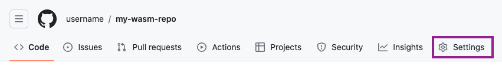
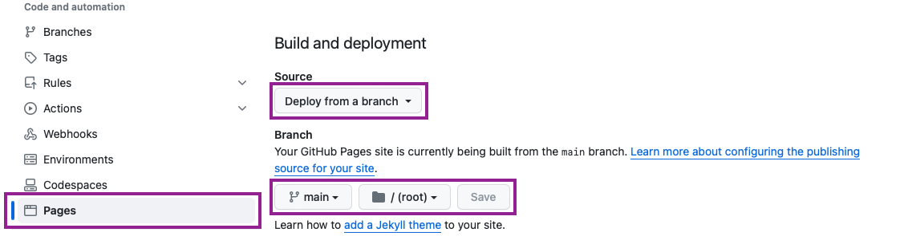

Compiling R packages for WebAssembly
Building binary R packages for WebAssembly (Wasm) requires
cross-compiling packages containing C/C++/Fortran source code using a
Wasm development toolchain. As such, the Emscripten C/C++ toolchain and a version
of LLVM flang configured to output Wasm must be
available in the environment for the rwasm package to
function.
There are two supported ways to ensure that the required environment
and toolchain is available. Either install and build a local development build of webR, or
use the rwasm package inside a pre-prepared Docker
container to build Wasm R packages.
Setting up the WebAssembly toolchain
First, ensure that Docker is installed on your machine1. Then, in a terminal, pull the latest version of the webR development container:
docker pull ghcr.io/r-wasm/webr:mainNext, create a new directory named output to store the
built R packages,
mkdir -p outputThen start R in the Docker container, mounting the new
output directory into place and setting it as the working
directory2:
docker run -it --rm -v ${PWD}/output:/output -w /output ghcr.io/r-wasm/webr:main RYou may now continue by working in this R session. The Docker
container will provide the required development environment and tools
for building binary R packages for Wasm. R packages and repositories
built in this way will be written in the directory
output.
Note that building webR from source takes a long time and a lot of
disk space, mostly due to the requirement of building LLVM
flang from source.
Follow the webR build instructions to download and build webR from source. If you are planning to build R packages that depend on system libraries, ensure that you also perform the optional step to additionally build all WebAssembly libraries.
Once webR has been built, we need to configure your environment so that the native R process can find your webR development installation. Make a note of your webR development directory and your Emscripten installation directory3.
Edit or create the file ~/.webr-vars.mk, and ensure it
contains the following lines, replacing the values with your own
installation directories:
The settings above can also be made available to R by exporting them as environment variables.
Installing the rwasm package
The rwasm package builds R binary packages for
WebAssembly, organising the output into CRAN-like repositories. The pak package can be used to install
rwasm from GitHub.
install.packages("pak")
pak::pak("r-wasm/rwasm")Once installed, load the rwasm package. If
rwasm is able to find the Wasm development environment, it
will print the directories it discovered and the version of webR that it
is targeting. This might be different to the version of R installed on
your native system.
Building an R package
R package binaries can be built for WebAssembly using the
build() function. The resulting Wasm R package binary and
an Emscripten filesystem image containing the R package are written to
the directory given by the out_dir argument, defaulting to
the current working directory.
build("cli")Wasm R package binaries must be made available to the webR filesystem
in some way before they can be used. Read on for more details on how to
build an R package library for static web hosting of Wasm R packages.
Alternatively, see vignette("mount-fs-image.Rmd") for
details on how to mount Emscripten filesystem images.
Adding an R package to a package repository
Use add_pkg() to build an R package (along with its
dependencies) for Wasm and add it to an R package repository. A new
directory named repo will be created for the repository if
it does not already exist, otherwise the existing repository will be
updated to include the new package. By default, hard package
dependencies will also be built for Wasm and added to the
repository.
add_pkg("cli")See the ?pkgdepends::pkg_refs article to see which kind
of package references can be used to add packages to the repository.
Managing and using the repository
The CRAN-like R package repository in the output directory
repo should be hosted by a web server so that it is
available at some URL. Such a URL can then be passed to
webr::install() as a repository from which to install Wasm
R packages.
Local testing
The R command given below starts a local web server to serve your
package repository for testing4. The
Access-Control-Allow-Origin: * HTTP header is included,
required for loading R packages from a cross-origin server through the
CORS
mechanism.
If you are using a Docker container to build Wasm R packages, be sure
to run the following command in a new R session outside Docker so that
the web server is accessible to the host machine. You might also want to
set dir = "./output" to serve the contents of the
output directory mounted in the Docker container.
httpuv::runStaticServer(
dir = ".",
port = 9090,
browse = FALSE,
headers = list("Access-Control-Allow-Origin" = "*")
)Once the web server is running start a webR session in your browser,
such as the console at https://webr.r-wasm.org/latest/. Install a package from
your local repository using your test server URL as the
repos argument5:
webr::install("cli", repos = "http://127.0.0.1:9090/repo")
#> Downloading webR package: cliDeployment to static hosting
Once you are happy that your R package repository is working and sufficient, it should be deployed to the web via a static file hosting service of your choice. In this example we will use GitHub Pages.
First, create a new directory for your GitHub repository and copy your webR binary repo into place.
mkdir -p my-wasm-repo
cp -r ./path/to/output/repo my-wasm-repo/repo
cd my-wasm-repoNext, initialise a new GitHub repository to host your binary R packages, and run the commands given by GitHub to initialise and push an initial commit of your Wasm binary packages.
git init
git add repo
git commit -m "First commit"
git branch -M main
git remote add origin https://github.com/username/my-wasm-repo.git
git push -u origin mainNow, in your web browser, refresh your GitHub project and click Settings. If you cannot see the “Settings” tab, click the dropdown menu, then click Settings.

In the “Code and automation” section of the sidebar, click Pages.
Under “Build and deployment”, under “Source”, select Deploy from a branch.
Under “Branch”, use the branch dropdown menu and select main as the publishing source, then click Save.

GitHub will then start to prepare your GitHub Pages site to contain your CRAN-like Wasm package repository.
After a little while6, your GitHub Pages website will be ready and webR should be able to install your package from the GitHub Pages repo URL.
webr::install("cli", repos = "http://username.github.io/my-wasm-repo/repo")
#> Downloading webR package: cli